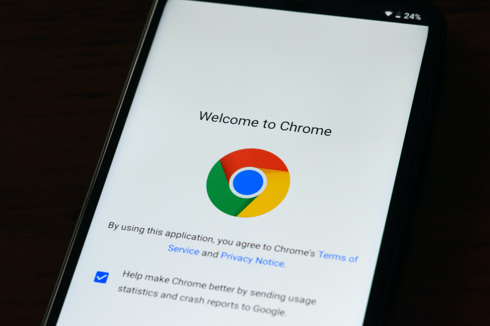

Google founders Larry Page and Sergey Brin recognized the weaknesses of the current search engines and found a way to improve the “search” feature. Their idea stemmed through the theory that the websites were a ‘popularity contest’. Users wanted to see sites that had the most views. They came up with link counting. The most visited links would be listed at the top of the search engine making it easier for users to find websites they intended to find.
First starting off, Page and Brin had a hard time finding investors for their search engine. They met with different companies including Excite, but were turned down. It was not until David Cheriton, their professor at Stanford, was able to finally help them out. Cheriton introduced Page and Brin to the first angel doner, Andy Bechtolsheim, who immediately wrote a check for $100,000. Bechtolsheim was the first of many doners to make Google possible.
The Google founders met with other investors and were given 12 million dollars by people such as John Doerr, because they predicted such as high as 10 billion in revenue. The money given allowed Google to create a search engine that was user-friendly, organized, and universally accessible. Banner ads were out of the question, along with commercializing their home page to keep the simplicity of the site appealing to users. Due to this, the new struggle they faced was figuring out their business model on how to show their ads. Luckily, they found Bill Gross, founder of a small company called Idealabs
Bill Gross figured out users searched for items they were interested in buying. He believed search engines could be the greatest marking tool. The key words users searched is a window into what the user might want to buy at that moment. The theory was similar to Yellow Page. Page and Brin took that idea and applied it to Google. When a user searched for an item, the left side would be ‘organic’ links of top website, while the right side of google would be advertisements.
Google went public on August 19, 2004 on the Nasdaq sales market. It went from zero profit to three billion dollars annually in a five year time span making it one of the fastest growing company. Google is a top tech company and is constantly improving. The Google campus is full of free food, games, bean bag chairs, to make it a fun and friendly environment to the employees.
Search engines Yahoo, Excite, and Google impacted how we gather information. Their influence on world wide web allowed users to view the content needed and are heavily used to this day!

